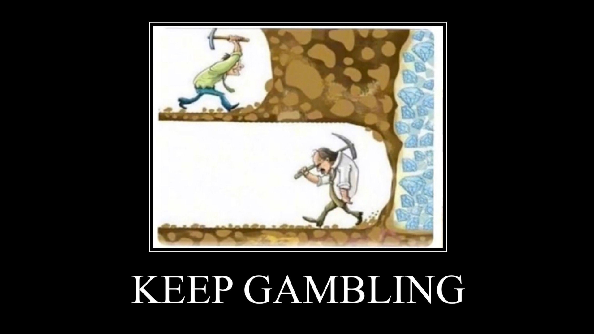
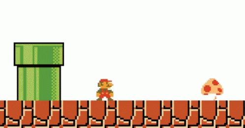

Week 10: Data Pipeline Orchestration
DSAN 5500: Data Structures, Objects, and Algorithms in Python
Class Sessions
Schedule
Today’s Planned Schedule:
| Start | End | Topic | |
|---|---|---|---|
| Lecture | 6:30pm | 7:00pm | JupyterHub and Final Project → |
| 7:00pm | 7:30pm | Prefect Intro Part 2 → | |
| 7:30pm | 8:00pm | Data Mining Intro → | |
| Break! | 8:00pm | 8:10pm | |
| 8:10pm | 9:00pm | Data Mining in Parallel → |
Logistical Tings
Project Management Tings
| Ting | Pros | Cons | Verdict |
|---|---|---|---|
| TasksBoard | Integrated with Google Workspace (@georgetown.edu emails) |
Free version useless (no share) | ❌ |
| Jira | Maybe most popular? | 30-day free trial | ❌ |
| Trello | Simpler than Jira (both owned by Atlassian) | 14-day free trial | ❌ |
| Airtable | Jeff uses this every day | .edu plan doesn’t include free users | ❌ |
| Notion | Jeff uses this v often, .edu plan has hackish way to include users for free | Force yall to sign up for new ting | ✅ |
JupyterHub
- Username = NetID (mine is
jj1088) - Password = Whatever you type in the first time(!)
Prefect Lab Part 2
HW4: Final Pieces of the Data-Pipelines Puzzle
- Overview (Quotes to Scrape)
- Web Scraping with BeautifulSoup
- Python’s
Counterclass - RRule.js
Data Mining

Quotes to Scrape
- Created by Zyte as a “sandbox” for web scraping
- Has “levels” representing more and more difficult scraping tasks: ToScrape.com
- Our case: Not harder than the “main” site, just a different task to simulate a different environment
- Could take the HW3 pipeline and “plug in” Twitter, stock data, etc.
First Pipeline: One Quote Per Second
- Extract: Scrape the quote data from the webpage’s HTML
- Transform: Filter out function words, compute frequencies for content words
- Load: Save the
- Our copilot: Pydantic!
- Use a
Quoteclass, extendingBaseModel, to specify data fields and ensure quality/uniformity
- Use a
- Run once per second, 10 times total
Second Pipeline: Post-Scrape Report
- First pipeline has successfully run 10 times… what now?
- Answer: Generate a report for your boss up at the entrance to the quote mine
- Extract: The ten scraped
Quoteobjects - Transform: Find top 5 words, top 5 tags, and generate a wordcloud
- Load: Embed the words, tags, and wordcloud within a Markdown document that gets emailed to your boss
BeautifulSoup
- Without giving away the answers…
- The key to this part is to inspect the source of the Quotes to Scrape page, and identify the HTML tags and classes containing each piece of info you need to extract!
RRules
- A language for specying schedules for tasks
- In the same way that we can run SQL queries from within Python, we can use RRule syntax to specify schedules for tasks from within Python
- RRule.js Demo
Python’s Counter Class
- A fancy wrapper around a plain-old
dict! - (Quick Colab demo to see how it works: creating a
Counter, combining twoCounters)
Serial Pipelines \(\rightarrow\) Parallel Pipelines
- Don’t worry; for now, just a high-level overview of what we’ll dive into in the final unit
Quick Survey Question, for Intuition-Building
- Are humans capable of “true” multi-tasking?
- As in, doing two things at the exact same time?
- (Or, do we instead rapidly switch back and forth between tasks?)
The Answer
- (From what we understand, at the moment, by way of studies in neuroscience/cognitive science/etc…)
- Humans are not capable of true multitasking! In CS terms, this would be called multiprocessing (more on this later)
- We are capable, however, of various modes of concurrency!
| Multithreading | Asynchronous Execution | |
|---|---|---|
| Unconsciously (you do it already, “naturally”) |
Focus on one speaker within a loud room, with tons of other conversations entering your ears | Put something in oven, set alarm, go do something else, take out of oven once alarm goes off |
| Consciously (you can do it with effort/practice) |
Pat head (up and down) and rub stomach (circular motion) “simultaneously” | Throw a ball in the air, clap 3 times, catch ball |
Helpful Specifically for Programming
- One famous book phrases it like: if implemented thoughtfully, concurrency is a power multiplier for your code (do 10 things in 1 second instead of 10 seconds…)

Helpful In General as a Way of Thinking!
- Say you get hired as a Project Manager…
- Part of your job will fundamentally involve pipelines!
- Need to know when Task \(B\) does/does not require Task \(A\) as a prerequisite
- Need to know whether Task \(A\) and Task \(B\) can share one resource or need their own individual resources
- Once Task \(A\) and \(B\) both complete, how do we merge their results together?
Avoiding the Rabbithole
- Parallel computing is a rabbithole, but one you can safely avoid via simple heuristics (“rules of thumb”)!
- Check for optimizations to serial code first,
- Check for embarrassingly parallel code blocks
- Use map-reduce approach for more complicated cases
“Embarrassingly Parallel” Pipelines
- Technical definition: tasks within pipeline can easily be parallelized bc no dependence and no need for communication (see next slide). Better video explanation:
Parallelizing Non-Embarrassingly-Parallel Pipelines…

Buzzkill: Complications to Come 😰
- If it’s such a magical powerup, shouldn’t we just parallelize everything? Answer: No 😞 because overhead.
- Overhead source 1: Beyond “embarrassingly parallel” cases, threads may require their own separate stacks and heaps
- Overhead source 2: Even after setting up new stacks and heaps, threads may need to communicate with one another (especially if they need to synchronize at some point(s))
- In fact, probably the earliest super-popular parallelization library was created to handle Source 2, not Source 1: Message Passing Interface (C, C++, and Fortran)
The Worst Part, IMO
- Plenty of problems in CS/data science have these kinds of complications… (if they weren’t complicated, we wouldn’t have as many jobs)
- We saw for example, with hash tables, how we can try our best to minimize collisions (MD5 and other provably-optimal hash functions), but can’t eliminate them entirely
- So, we tackle this complication by also developing efficient collision-handling structures like BSTs!
- With parallel overhead costs, however… I don’t know of any easily-accessible “thing” like the theory of hash tables that can be used to optimize parallelization
- In other words, you would think we could do a similar optimization: paralellize if benefits > costs, keep as serial otherwise
- But, if you try to find a “framework” for this, you’ll mostly find StackOverflow posts, textbooks, etc. which say “stuff varies too much between different chipsets, languages, operating systems, etc… sorry!”
The Solution?
- Again, as far as I can tell (despite workshops/courses and two summer internships just parallelizing stuff)…
- You just start trying to parallelize, carefully measure and test the performance gains/losses, and then
- Decide whether to commit to parallel or stick to serial, via an estimate of how your analysis/app will need to scale!
- Hence the usefulness of Prefect for visualizing tradeoff:
- Tasks which used to run in serial will now run at same time, but will take longer (unless embarrassingly parallel) due to setup+communication overhead